Fleet variety: before and after
Clay contact sheets (paint off) of real mustered hulls: one row per muster band, twelve hulls each, a three-quarter view above a top view, one scale per row. Numbers from scripts/variety-report.cjs: 39926 hulls on this build, 39926 on main. Criteria and method in VARIETY.md.
503 of 503 criterion checks pass. Fleet recognition from silhouette alone: 99% on main, 99% now (chance 5%).
Yard

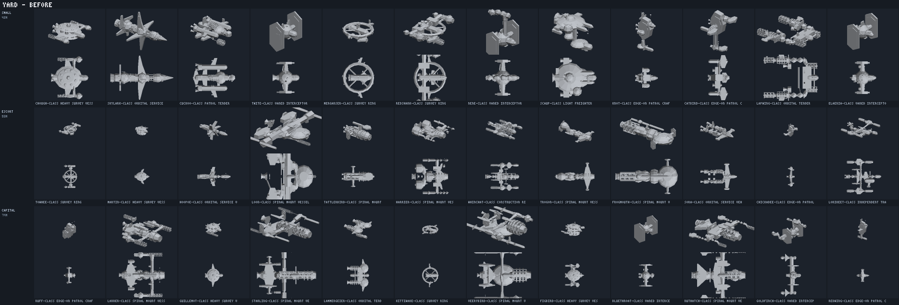

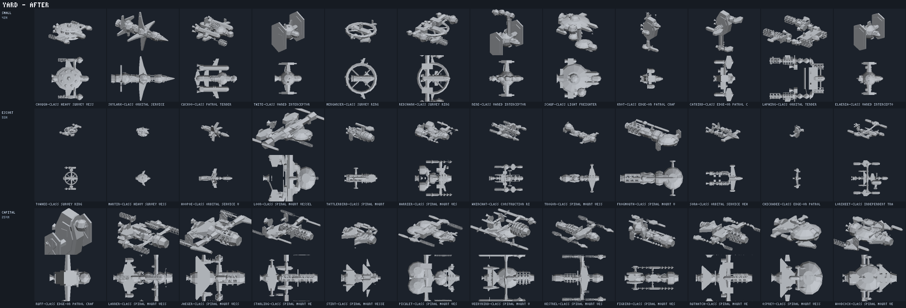
| band | distinct shapes | largest shape's share | closest two classes | band reach |
|---|---|---|---|---|
| small | 755.8 → 755.8 | 1% → 1% | 0.53 → 0.53 | |
| escort | 224.6 → 224.6 | 1% → 1% | 0.54 → 0.54 | |
| capital | 115.9 → 118.6 | 2% → 2% | 0.51 → 0.47 | 0% → 100% |
Recognised from silhouette alone: 95% → 94%. Sister spread, median per class: one-off designs. Classes: one-off designs.
Shoal

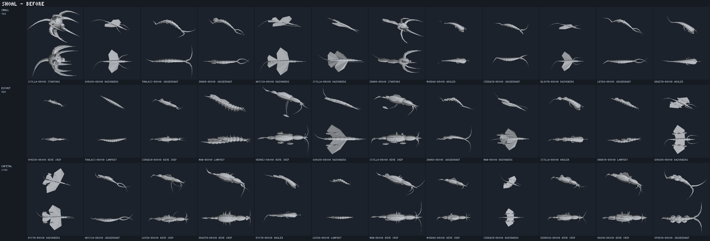

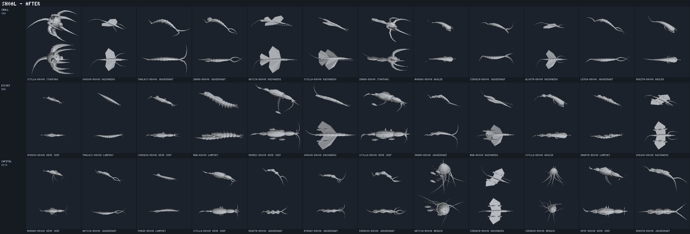
| band | distinct shapes | largest shape's share | closest two classes | band reach |
|---|---|---|---|---|
| small | 1034.5 → 1034.5 | 0% → 0% | 0.57 → 0.57 | |
| escort | 118.0 → 118.0 | 1% → 1% | 0.55 → 0.55 | |
| capital | 80.0 → 80.0 | 1% → 1% | 0.53 → 0.59 | 76% → 100% |
Recognised from silhouette alone: 93% → 93%. Sister spread, median per class: one-off designs. Classes: one-off designs.
Lattice

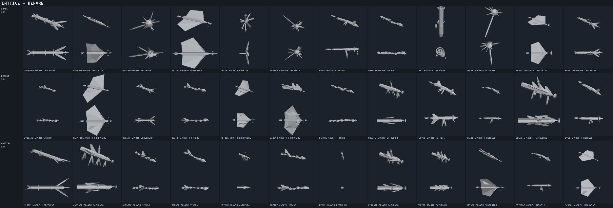

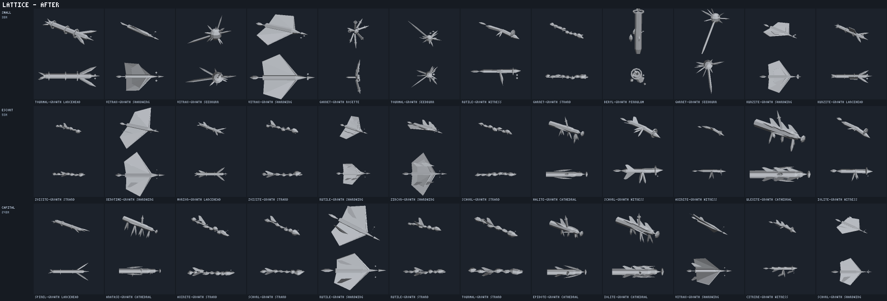
| band | distinct shapes | largest shape's share | closest two classes | band reach |
|---|---|---|---|---|
| small | 752.8 → 752.8 | 0% → 0% | 0.55 → 0.55 | |
| escort | 233.2 → 233.2 | 1% → 1% | 0.56 → 0.56 | |
| capital | 111.3 → 112.6 | 2% → 2% | 0.56 → 0.55 | 4% → 100% |
Recognised from silhouette alone: 94% → 93%. Sister spread, median per class: one-off designs. Classes: one-off designs.
Drift

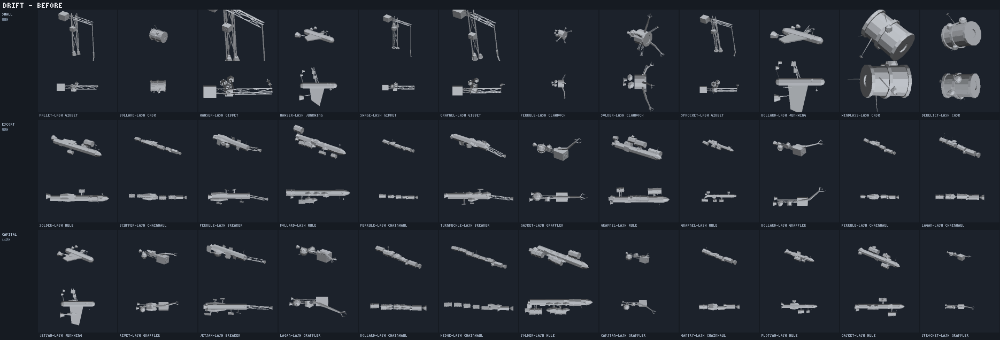

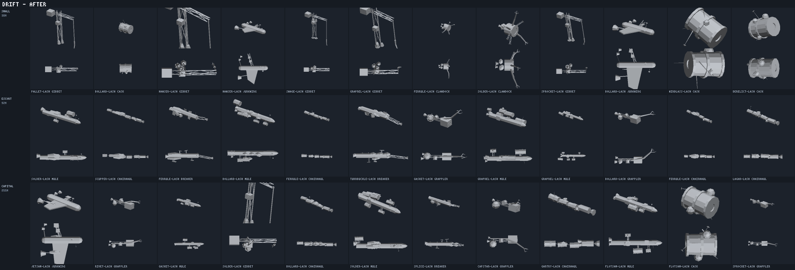
| band | distinct shapes | largest shape's share | closest two classes | band reach |
|---|---|---|---|---|
| small | 763.3 → 763.3 | 1% → 1% | 0.52 → 0.52 | |
| escort | 167.1 → 167.1 | 2% → 2% | 0.49 → 0.49 | |
| capital | 74.6 → 77.3 | 3% → 3% | 0.51 → 0.49 | 39% → 100% |
Recognised from silhouette alone: 99% → 98%. Sister spread, median per class: one-off designs. Classes: one-off designs.
Choir

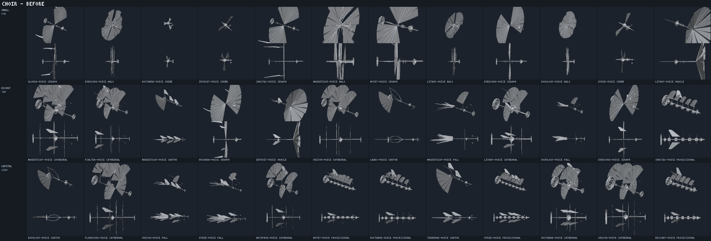

| band | distinct shapes | largest shape's share | closest two classes | band reach |
|---|---|---|---|---|
| small | 466.4 → 466.4 | 1% → 1% | 0.60 → 0.60 | |
| escort | 299.5 → 299.5 | 1% → 1% | 0.67 → 0.67 | |
| capital | 146.6 → 146.6 | 1% → 1% | 0.67 → 0.67 | 99% → 99% |
Recognised from silhouette alone: 100% → 100%. Sister spread, median per class: one-off designs. Classes: one-off designs.
Imperial

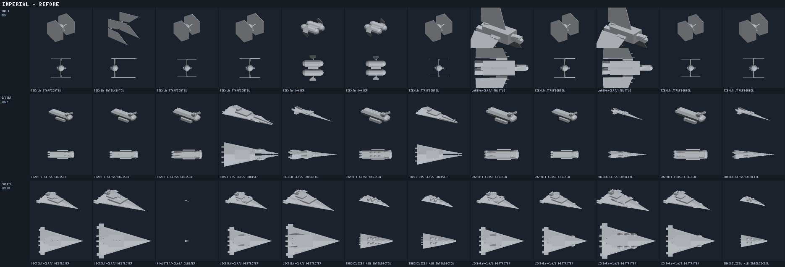

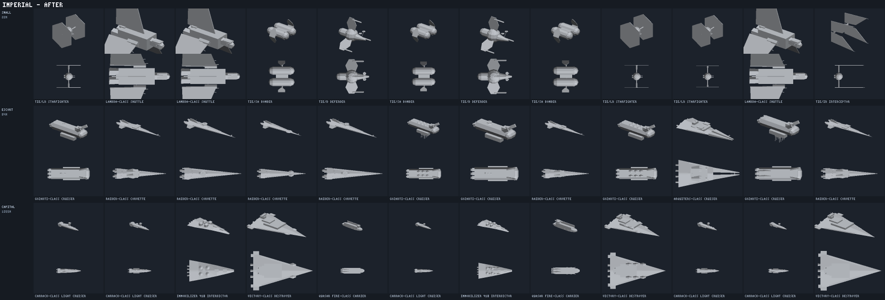
| band | distinct shapes | largest shape's share | closest two classes | band reach |
|---|---|---|---|---|
| small | 5.2 → 6.9 | 33% → 20% | 0.58 → 0.61 | |
| escort | 3.0 → 3.3 | 35% → 49% | 0.51 → 0.52 | |
| capital | 2.3 → 5.4 | 56% → 38% | 0.22 → 0.37 | 100% → 100% |
Recognised from silhouette alone: 100% → 100%. Sister spread, median per class: 0.05–0.16. Classes: 13.
Rebel

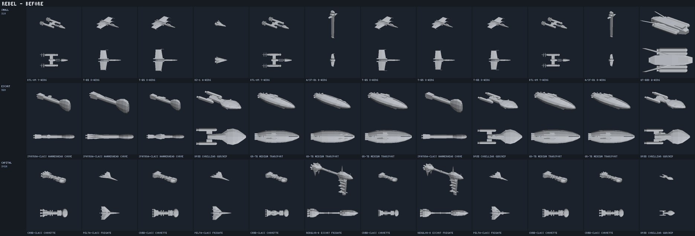

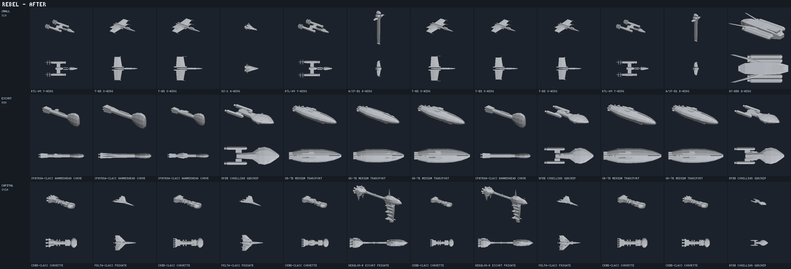
| band | distinct shapes | largest shape's share | closest two classes | band reach |
|---|---|---|---|---|
| small | 4.8 → 4.8 | 30% → 30% | 0.50 → 0.49 | |
| escort | 3.6 → 3.7 | 38% → 40% | 0.28 → 0.31 | |
| capital | 4.9 → 5.5 | 30% → 30% | 0.29 → 0.30 | 100% → 100% |
Recognised from silhouette alone: 100% → 100%. Sister spread, median per class: 0.04–0.11. Classes: 11.
Minbari

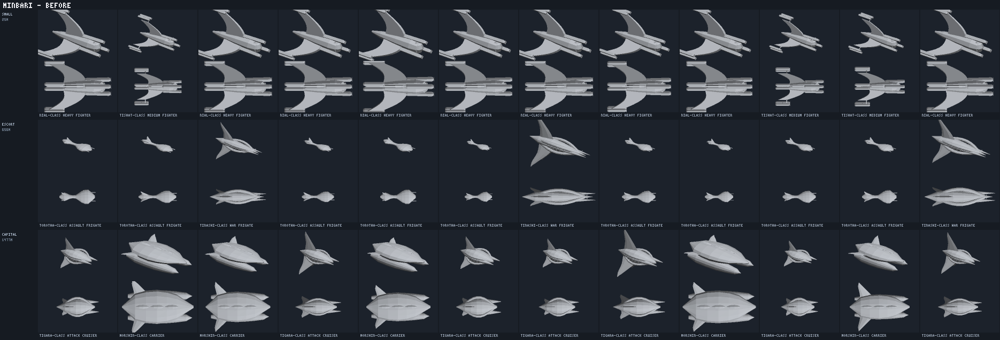

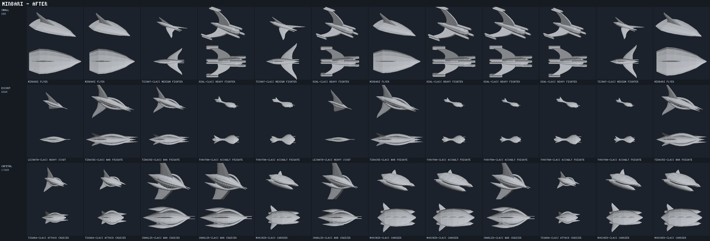
| band | distinct shapes | largest shape's share | closest two classes | band reach |
|---|---|---|---|---|
| small | 1.0 → 22.2 | 100% → 8% | 0.12 → 0.55 | |
| escort | 3.5 → 5.8 | 42% → 30% | 0.54 → 0.51 | |
| capital | 6.5 → 8.3 | 25% → 21% | 0.45 → 0.45 | 100% → 100% |
Recognised from silhouette alone: 100% → 100%. Sister spread, median per class: 0.12–0.20. Classes: 9.
Shadows

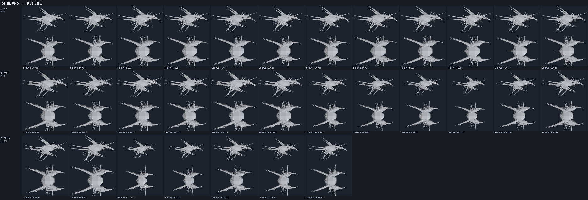

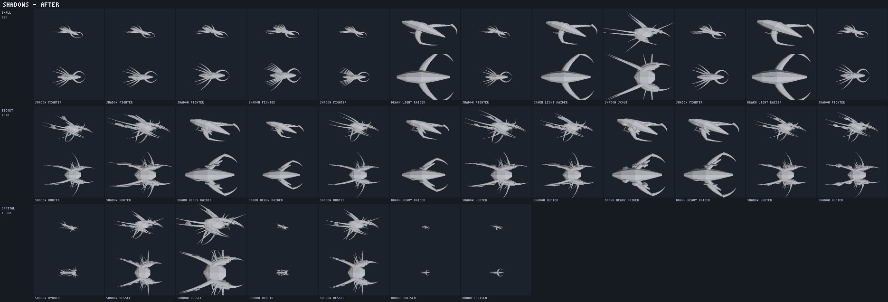
| band | distinct shapes | largest shape's share | closest two classes | band reach |
|---|---|---|---|---|
| small | 1.0 → 13.8 | 100% → 12% | - → 0.62 | |
| escort | 1.0 → 8.5 | 100% → 28% | - → 0.62 | |
| capital | 1.2 → 6.4 | 95% → 39% | 0.01 → 0.56 | 99% → 100% |
Recognised from silhouette alone: 100% → 100%. Sister spread, median per class: 0.12–0.23. Classes: 8.
EarthForce

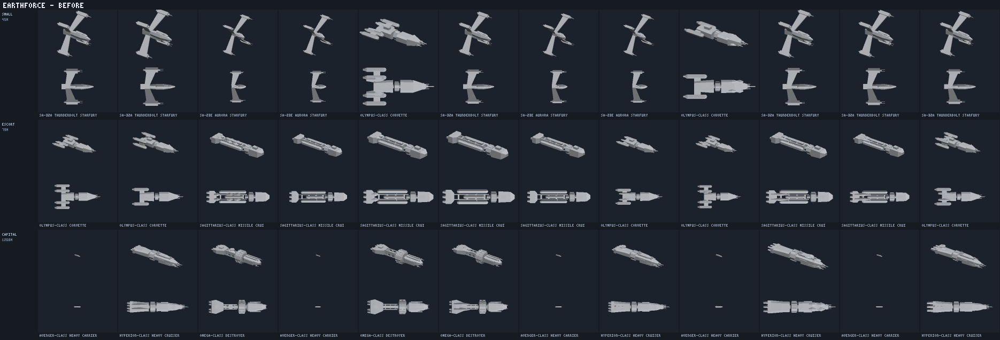

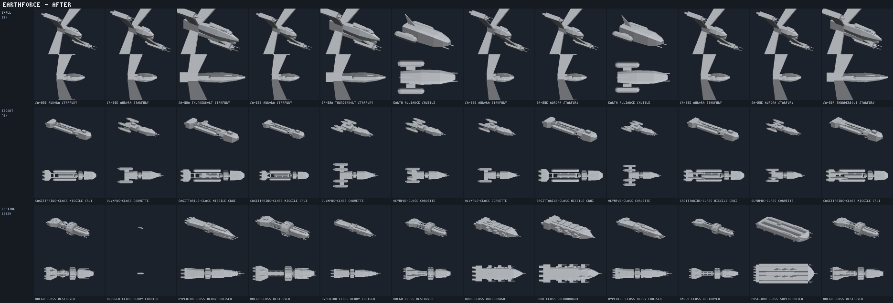
| band | distinct shapes | largest shape's share | closest two classes | band reach |
|---|---|---|---|---|
| small | 2.3 → 4.6 | 67% → 40% | 0.48 → 0.48 | |
| escort | 4.3 → 4.2 | 41% → 46% | 0.40 → 0.40 | |
| capital | 2.9 → 6.0 | 43% → 24% | 0.22 → 0.22 | 100% → 100% |
Recognised from silhouette alone: 100% → 100%. Sister spread, median per class: 0.05–0.22. Classes: 10.
Federation

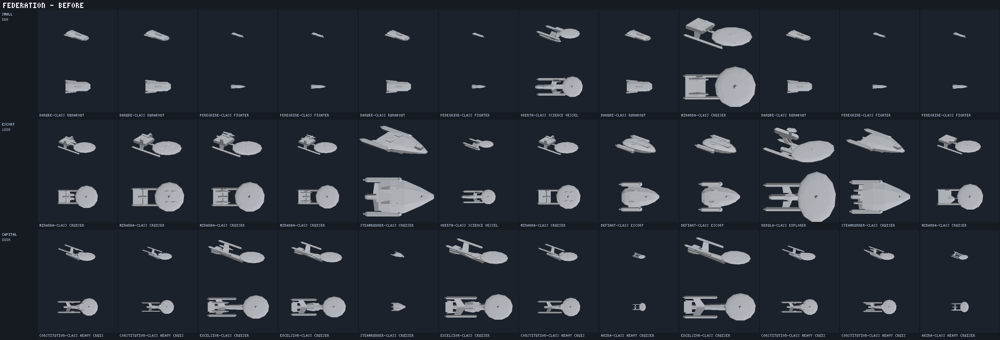

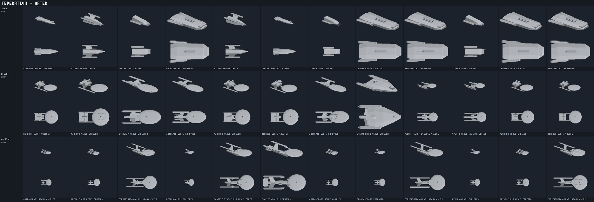
| band | distinct shapes | largest shape's share | closest two classes | band reach |
|---|---|---|---|---|
| small | 2.8 → 4.0 | 48% → 28% | 0.51 → 0.33 | |
| escort | 7.2 → 6.3 | 28% → 27% | 0.44 → 0.43 | |
| capital | 6.0 → 5.0 | 24% → 26% | 0.33 → 0.33 | 100% → 100% |
Recognised from silhouette alone: 100% → 100%. Sister spread, median per class: 0.05–0.08. Classes: 13.
Klingon

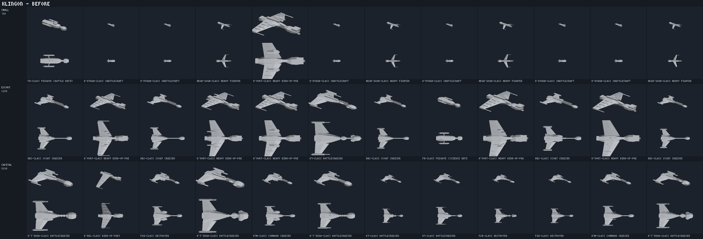

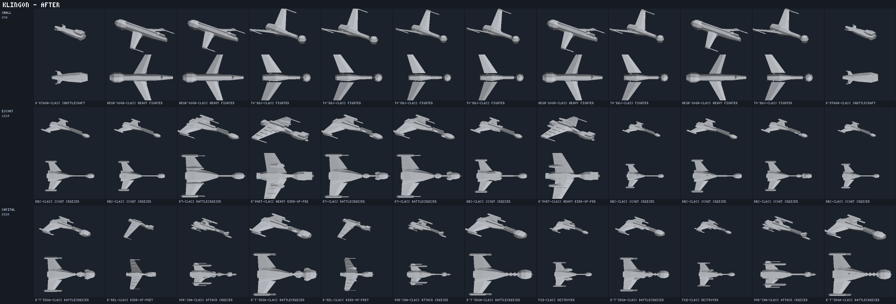
| band | distinct shapes | largest shape's share | closest two classes | band reach |
|---|---|---|---|---|
| small | 2.3 → 3.6 | 53% → 36% | 0.41 → 0.53 | |
| escort | 7.4 → 6.2 | 28% → 27% | 0.23 → 0.25 | |
| capital | 5.4 → 6.7 | 44% → 27% | 0.11 → 0.23 | 100% → 100% |
Recognised from silhouette alone: 100% → 100%. Sister spread, median per class: 0.05–0.16. Classes: 11.
Borg

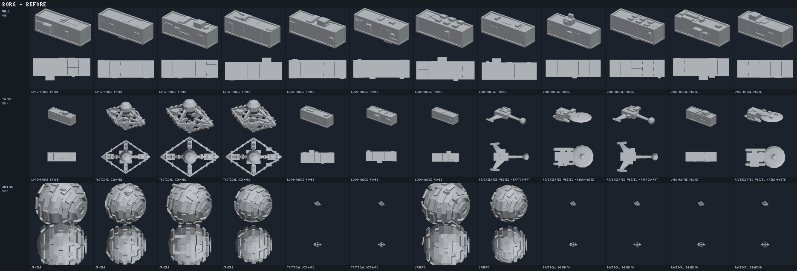

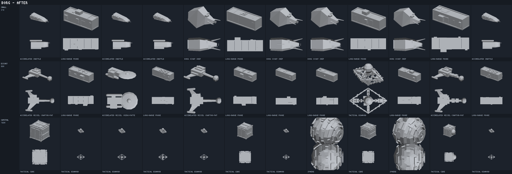
| band | distinct shapes | largest shape's share | closest two classes | band reach |
|---|---|---|---|---|
| small | 5.2 → 4.4 | 31% → 39% | 0.45 → 0.33 | |
| escort | 8.8 → 9.6 | 25% → 28% | 0.43 → 0.44 | |
| capital | 2.0 → 3.7 | 54% → 31% | 0.65 → 0.21 | 100% → 100% |
Recognised from silhouette alone: 100% → 100%. Sister spread, median per class: 0.05–0.19. Classes: 8.
Mondoshawan

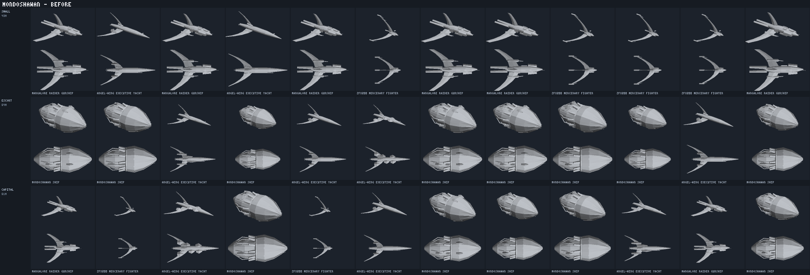

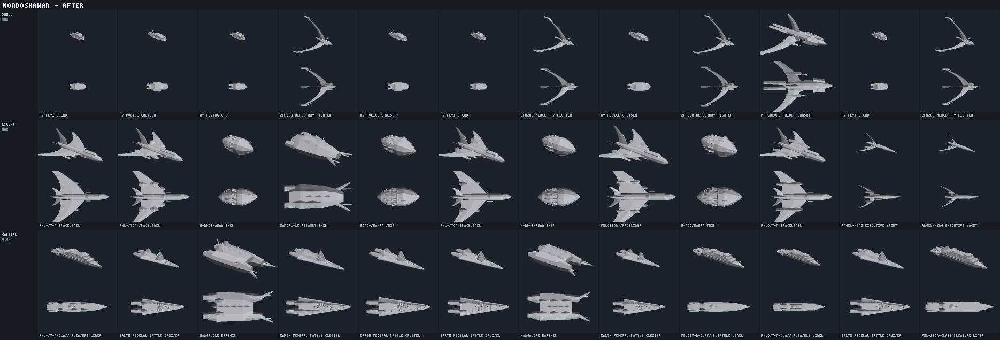
| band | distinct shapes | largest shape's share | closest two classes | band reach |
|---|---|---|---|---|
| small | 3.2 → 4.4 | 40% → 32% | 0.05 → 0.30 | |
| escort | 1.8 → 3.9 | 71% → 30% | 0.71 → 0.40 | |
| capital | 4.0 → 3.7 | 44% → 38% | 0.05 → 0.44 | 0% → 100% |
Recognised from silhouette alone: 100% → 100%. Sister spread, median per class: 0.05–0.10. Classes: 11.
USCM

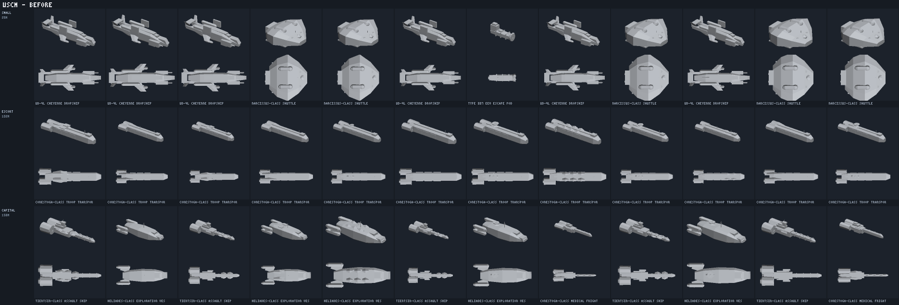

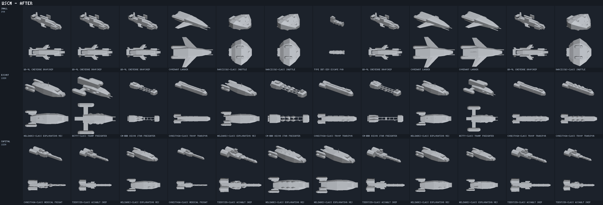
| band | distinct shapes | largest shape's share | closest two classes | band reach |
|---|---|---|---|---|
| small | 2.8 → 4.4 | 53% → 43% | 0.45 → 0.42 | |
| escort | 1.1 → 5.0 | 98% → 36% | 0.31 → 0.25 | |
| capital | 3.2 → 3.4 | 42% → 37% | 0.31 → 0.35 | 100% → 100% |
Recognised from silhouette alone: 100% → 100%. Sister spread, median per class: 0.05–0.16. Classes: 10.
Engineers

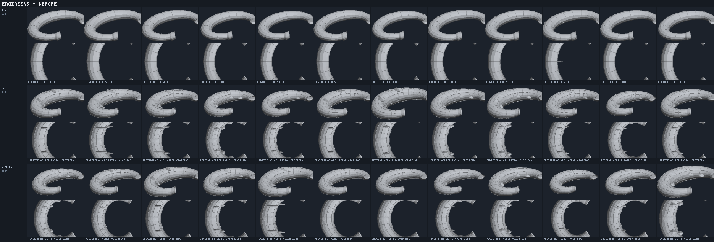

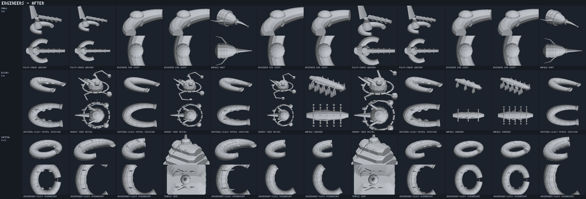
| band | distinct shapes | largest shape's share | closest two classes | band reach |
|---|---|---|---|---|
| small | 1.1 → 13.0 | 99% → 20% | 0.26 → 0.63 | |
| escort | 1.0 → 17.7 | 100% → 25% | - → 0.52 | |
| capital | 1.0 → 5.7 | 100% → 38% | - → 0.72 | 100% → 100% |
Recognised from silhouette alone: 100% → 100%. Sister spread, median per class: 0.08–0.22. Classes: 8.
Yautja

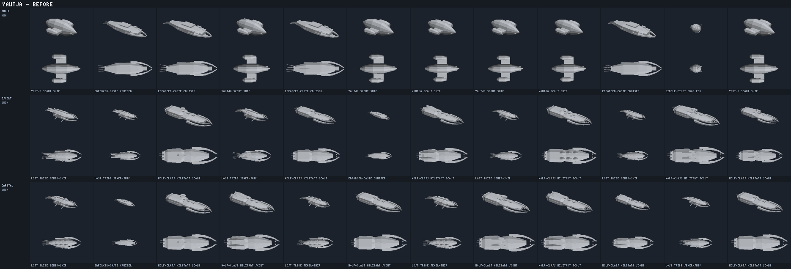

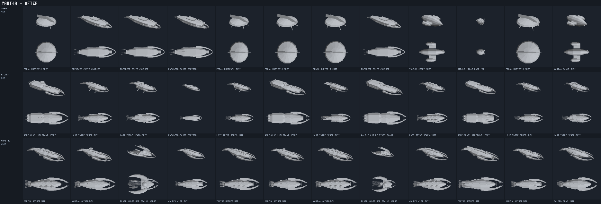
| band | distinct shapes | largest shape's share | closest two classes | band reach |
|---|---|---|---|---|
| small | 2.6 → 3.9 | 59% → 36% | 0.49 → 0.38 | |
| escort | 3.7 → 3.4 | 38% → 49% | 0.20 → 0.21 | |
| capital | 3.9 → 4.0 | 48% → 40% | 0.21 → 0.24 | 41% → 100% |
Recognised from silhouette alone: 100% → 100%. Sister spread, median per class: 0.05–0.11. Classes: 9.
First Ones

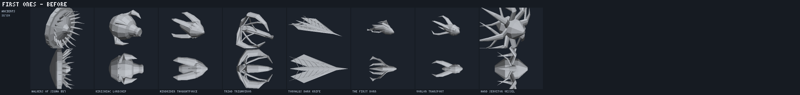

The First Ones muster eight unique ancients, not bands.
Romulans

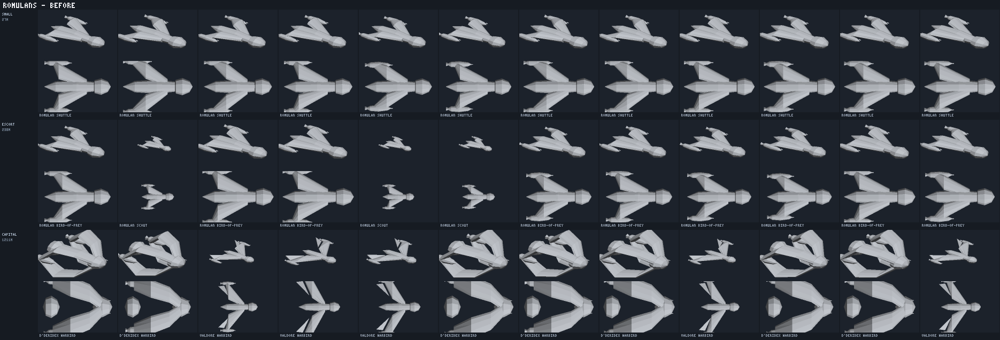

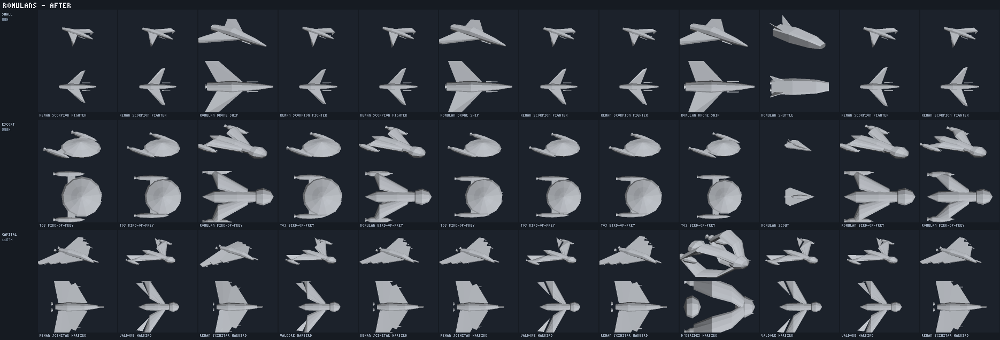
| band | distinct shapes | largest shape's share | closest two classes | band reach |
|---|---|---|---|---|
| small | 1.0 → 5.0 | 100% → 35% | - → 0.58 | |
| escort | 1.0 → 4.6 | 100% → 34% | 0.06 → 0.52 | |
| capital | 2.0 → 3.6 | 53% → 41% | 0.78 → 0.44 | 100% → 100% |
Recognised from silhouette alone: 100% → 100%. Sister spread, median per class: 0.05–0.15. Classes: 9.
Dominion

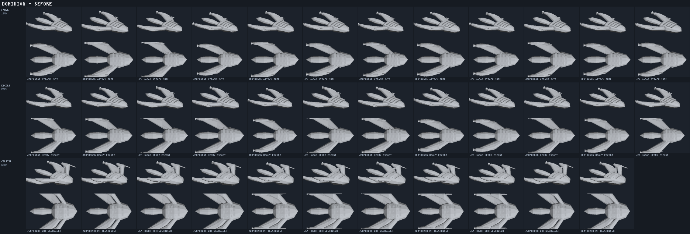

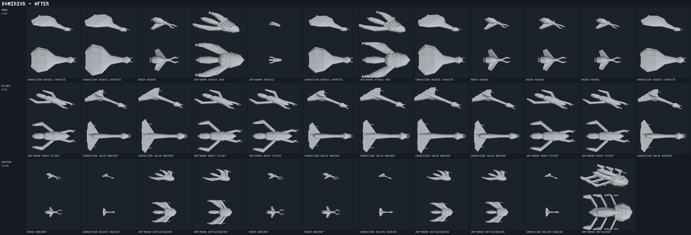
| band | distinct shapes | largest shape's share | closest two classes | band reach |
|---|---|---|---|---|
| small | 1.0 → 4.3 | 100% → 33% | - → 0.40 | |
| escort | 1.0 → 3.8 | 100% → 40% | 0.09 → 0.49 | |
| capital | 1.0 → 4.5 | 100% → 34% | - → 0.37 | 100% → 100% |
Recognised from silhouette alone: 100% → 100%. Sister spread, median per class: 0.05–0.12. Classes: 10.
Space Marines

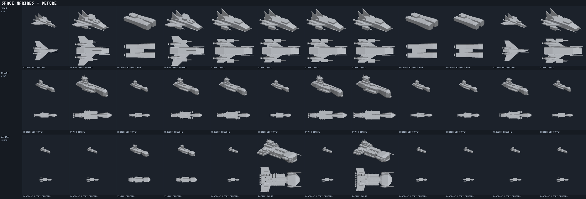

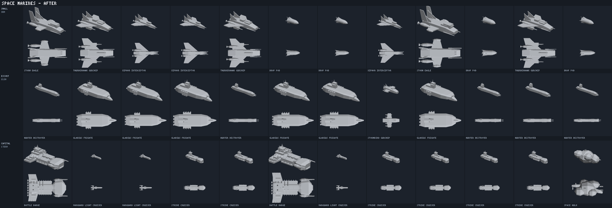
| band | distinct shapes | largest shape's share | closest two classes | band reach |
|---|---|---|---|---|
| small | 2.8 → 4.9 | 52% → 24% | 0.14 → 0.31 | |
| escort | 1.0 → 4.4 | 100% → 31% | 0.05 → 0.39 | |
| capital | 1.9 → 4.5 | 67% → 40% | 0.12 → 0.37 | 100% → 100% |
Recognised from silhouette alone: 100% → 100%. Sister spread, median per class: 0.05–0.08. Classes: 13.
Tyranids

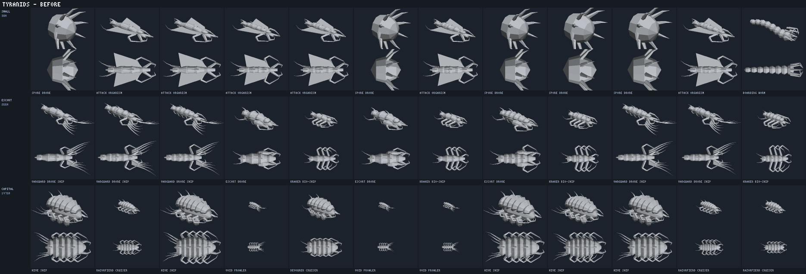

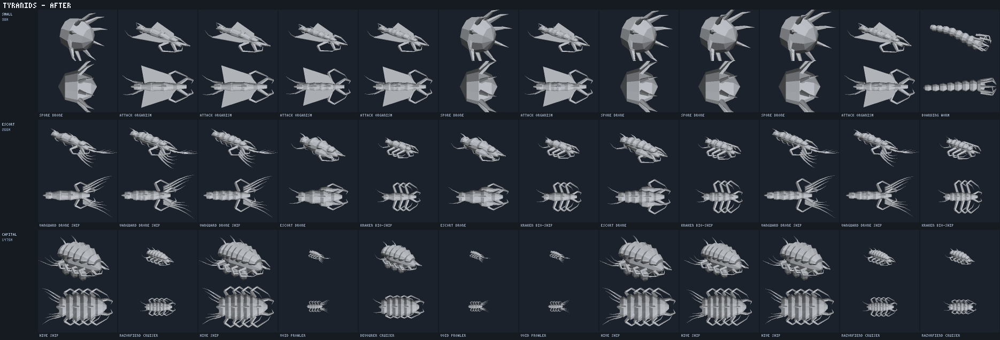
| band | distinct shapes | largest shape's share | closest two classes | band reach |
|---|---|---|---|---|
| small | 3.6 → 9.0 | 36% → 21% | 0.58 → 0.59 | |
| escort | 5.3 → 5.3 | 30% → 30% | 0.32 → 0.32 | |
| capital | 8.5 → 8.5 | 19% → 19% | 0.23 → 0.23 | 100% → 100% |
Recognised from silhouette alone: 100% → 100%. Sister spread, median per class: 0.08–0.18. Classes: 10.
Tesla

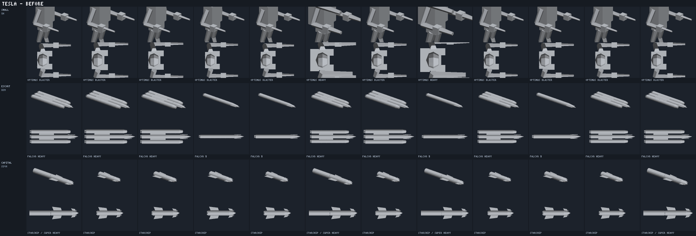

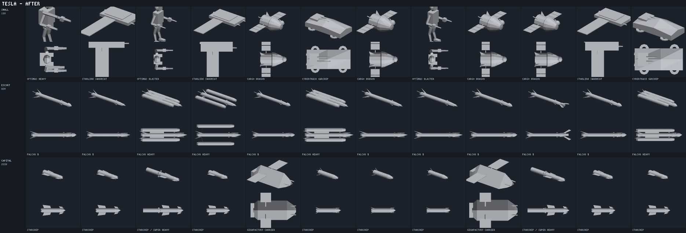
| band | distinct shapes | largest shape's share | closest two classes | band reach |
|---|---|---|---|---|
| small | 1.8 → 4.8 | 75% → 28% | 0.23 → 0.23 | |
| escort | 2.0 → 4.0 | 54% → 39% | 0.42 → 0.44 | |
| capital | 2.0 → 3.9 | 58% → 42% | 0.46 → 0.41 | 100% → 100% |
Recognised from silhouette alone: 100% → 100%. Sister spread, median per class: 0.05–0.15. Classes: 10.
Scenes
A Shadow fleet arriving
Shadows v Imperial, seed 811, 300 a side, war time 0–16 s.
An Engineer fleet in its crescent
Engineers v Rebel, seed 1512, 300 a side, war time 14–28 s.
Dominion against Romulans
Dominion v Romulans, seed 1918, 300 a side, war time 26–40 s.
Space Marines in their wall
Space Marines v Tyranids, seed 2021, 300 a side, war time 12–26 s.
Imperial against Rebels, both lines wide
Imperial v Rebel, seed 506, 400 a side, war time 20–34 s.
Minbari, with a Sharlin in frame
Minbari v EarthForce, seed 709, 300 a side, war time 18–32 s.
Tesla against Tyranids
Tesla v Tyranids, seed 2221, 300 a side, war time 24–38 s.
Every fleet's muster in the ship study, one band at a time
A full 90-second war in Broadcast, 600 a side, Ultra
Imperial v Rebel, seed 9090, 600 a side, war time 0–90 s.